FP1 Chapter 4 — Coordinate
Systems
Student note and classroom display file 49–68 .Further Pure Mathematics 1_1.pdf, these are PDF pages
60–79 .
Learning objectives
By the end of this chapter, you should be able to:
plot and sketch a curve given parametrically;
eliminate a parameter to obtain a Cartesian equation;
use the Cartesian and parametric forms of a parabola;
use the focus–directrix definition of a parabola;
use the Cartesian and parametric forms of a rectangular
hyperbola;
find tangent and normal equations for parabolas and rectangular
hyperbolas;
use parameter equations to solve chord, intersection and locus
problems.
FP1 exam boundary and past-paper map
PEARSON EDEXCEL FP1
Read the specification before expanding the lesson
Click the extract to enlarge
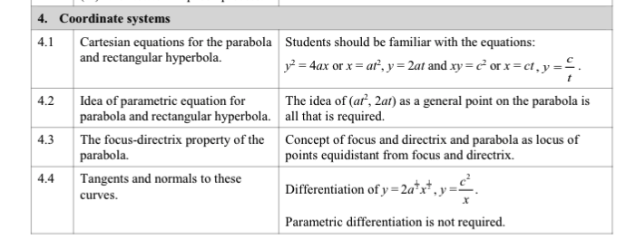
Official specification extract: Unit FP1, Coordinate systems, points 4.1-4.4.
Scope gate - Pearson FP1 requires only four things here:
Cartesian and parameter forms of y²=4ax and xy=c² ;
the parabola as the locus equidistant from its focus and directrix;
tangents and normals found from y²=4ax and y=c²/x ;
ordinary algebra after substitution: straight lines, quadratics, coordinates, lengths and areas.
Explicit boundary: parametric differentiation is not required. A vertical parabola may be mentioned only as an optional axis-swap illustration; it does not need a separate formula set or exam routine. General ellipse/hyperbola focus-directrix theory is an FP3 topic, not FP1.
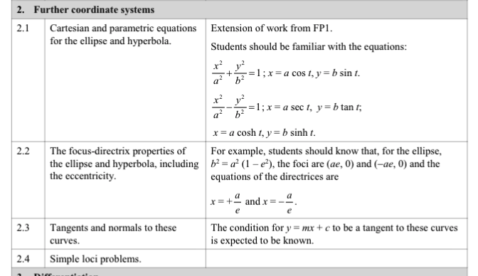
Official specification extract: Unit FP3, Further coordinate systems, points 2.1-2.4.
Students will meet these ideas later:
Cartesian and parametric equations of the ellipse and general hyperbola ;
focus-directrix properties of those curves;
eccentricity, foci and directrices;
tangents, normals and simple loci for the extended curves.
Boundary message for students: FP1 builds the parabola and rectangular-hyperbola techniques. FP3 later generalises them. You are not expected to import the FP3 formulae into current FP1 questions.
What the collected past-paper questions actually do
Parabola: read a from the standard form; use S=(a,0) and x=-a; write a parameter tangent/normal; use two parameters for a chord; or eliminate one parameter for a locus.
Rectangular hyperbola: write P=(ct,c/t); derive a tangent/normal using y=c²/x; substitute a line back into xy=c²; then use the known root or a parameter condition.
Teaching rule: if a method does not feed one of those operations, treat it as enrichment rather than examinable FP1 content.
4.1 Parametric equations
1. What is a parametric
equation?
Instead of writing one equation connecting
x x y y parameter :
x = f ( t ) , y = g ( t ) .
x=f(t), \qquad y=g(t).
As
t t ( x , y ) (x,y)
the set of points on the curve;
the direction in which the curve is traced as
t t
2. A reliable sketching
procedure
Record the permitted values of
t t
Make a short table of
t t x x y y
Find any intercepts and repeated points.
Find critical values from
d x d t = 0 \dfrac{dx}{dt}=0 d y d t = 0 \dfrac{dy}{dt}=0
Check what happens at the endpoints of the
t t t → ± ∞ t\to\pm\infty
Plot the key points in increasing order of
t t
Join them smoothly and add arrows showing increasing
t t
For a complete interactive version of the curve-sketching procedure,
open Parametric
Curve Sketching — Complete English Example .
If derivatives are available, then
d y d x = d y / d t d x / d t , d x d t ≠ 0 .
\frac{dy}{dx}=\frac{dy/dt}{dx/dt}, \qquad \frac{dx}{dt}\ne0.
Textbook Example 1 —
sketch from a table
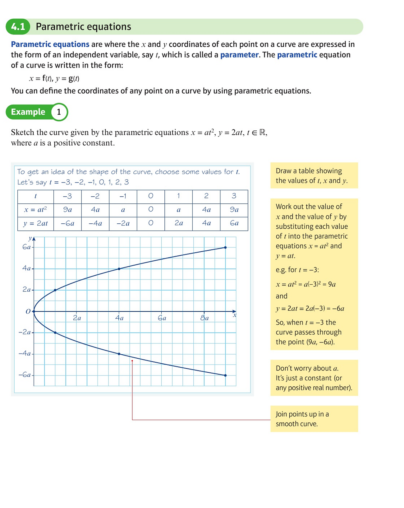
Source: textbook Example 1, book p.50; original PDF
p.61.
For
x = a t 2 , y = 2 a t ,
x=at^2, \qquad y=2at,
x ≥ 0 x\ge0 ( 0 , 0 ) (0,0) t t x x
3. Eliminating the parameter
Parabola pattern
If
x = a t 2 , y = 2 a t ,
x=at^2, \qquad y=2at,
then
t = y 2 a
t=\frac{y}{2a}
and therefore
x = a ( y 2 a ) 2 = y 2 4 a .
x=a\left(\frac{y}{2a}\right)^2=\frac{y^2}{4a}.
Hence
y 2 = 4 a x .
\boxed{y^2=4ax}.
Rectangular-hyperbola
pattern
If
x = c t , y = c t , t ≠ 0 ,
x=ct, \qquad y=\frac{c}{t}, \qquad t\ne0,
then multiplying the equations gives
x y = ( c t ) ( c t ) = c 2 .
xy=(ct)\left(\frac{c}{t}\right)=c^2.
Hence
x y = c 2 .
\boxed{xy=c^2}.
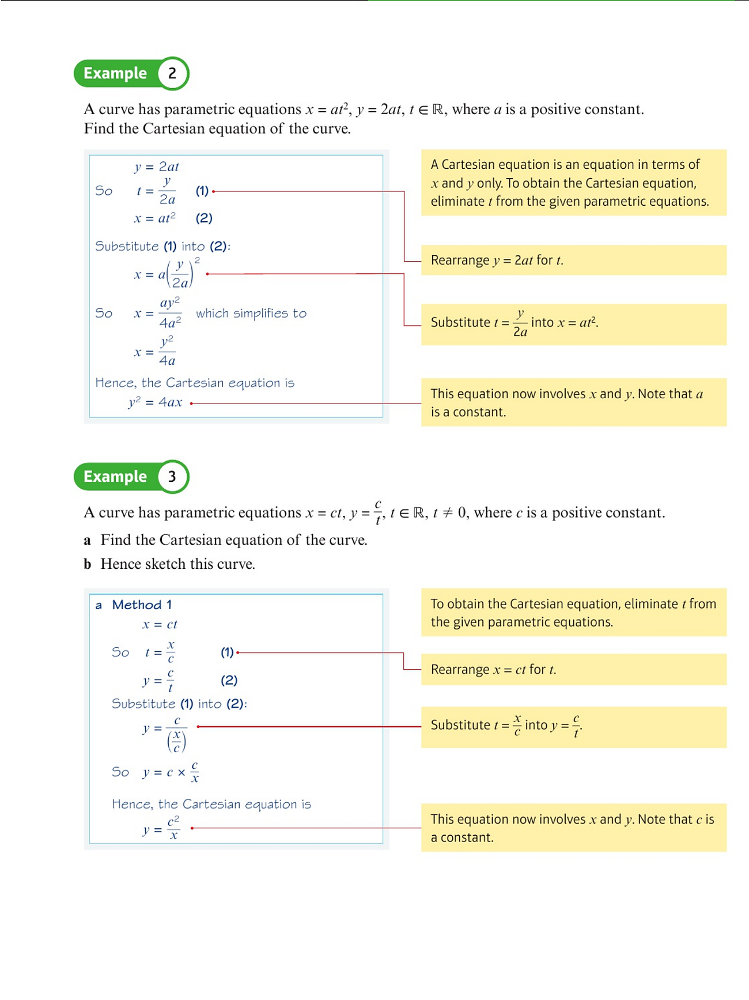
Source: textbook Examples 2 and 3, book p.51; original PDF
p.62.
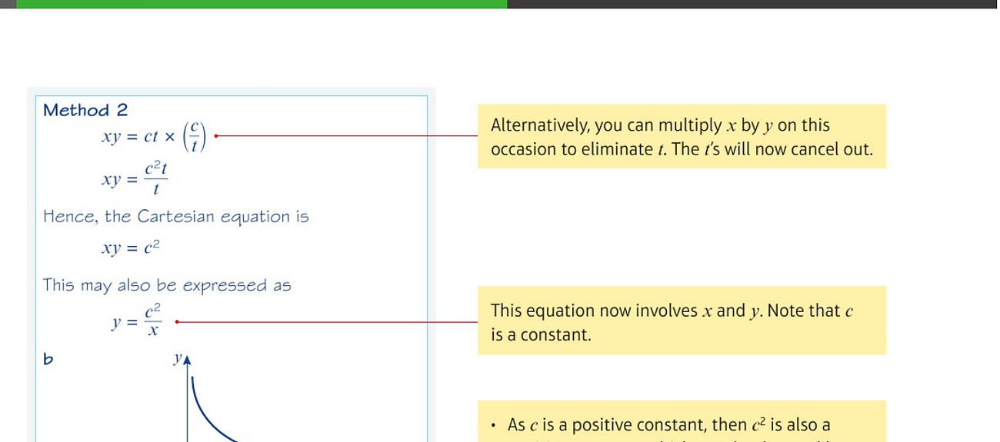
Source: continuation of textbook Example 3, book p.52; original
PDF p.63.
Important domain warning
Eliminating
t t t t
For example, if
t > 0 t>0
x = c t , y = c t ,
x=ct, \qquad y=\frac{c}{t},
then only the first-quadrant branch of
x y = c 2 xy=c^2
Selected textbook
practice for Section 4.1
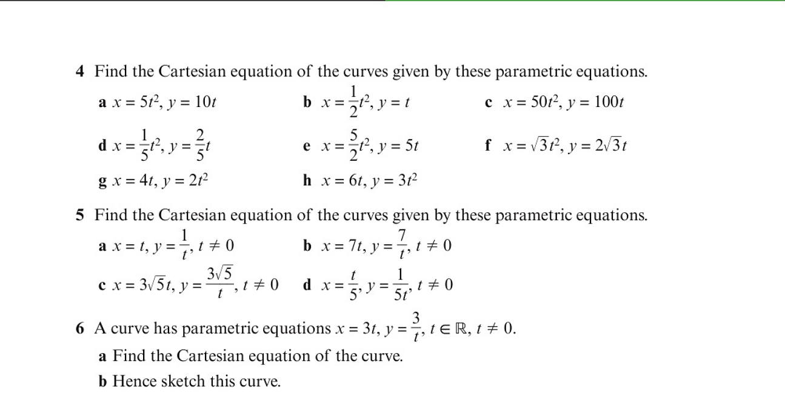
Source: Exercise 4A, book p.53; original PDF p.64.
Recommended selection:
Exercise 4A Q4(a), (d), (g): identify the resulting
parabola and its orientation;Exercise 4A Q5(a), (b), (c): recognise the
x y = constant xy=\text{constant} Exercise 4A Q6 and Q7: eliminate
t t
4.2 The general equation
of a parabola
For
a > 0 a>0
y 2 = 4 a x
\boxed{y^2=4ax}
and the parametric representation
x = a t 2 , y = 2 a t .
\boxed{x=at^2, \qquad y=2at}.
A general point is
P ( a t 2 , 2 a t ) .
P(at^2,2at).
Its main features are:
Feature
Result
Vertex
( 0 , 0 ) (0,0)
Axis of symmetry
y = 0 y=0
Focus
S ( a , 0 ) S(a,0)
Directrix
x = − a x=-a
Parametric point
P ( a t 2 , 2 a t ) P(at^2,2at)
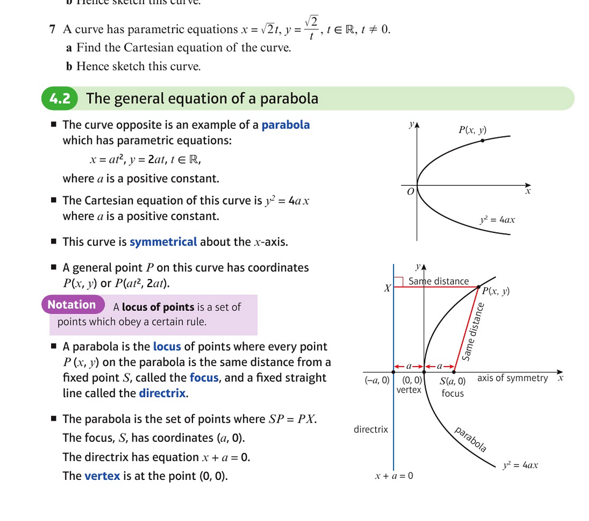
Source: Section 4.2 introduction, book p.53; original PDF
p.64.
2. Focus–directrix
definition and derivation
A parabola is the locus of a point
P ( x , y ) P(x,y) focus , equals
its perpendicular distance from a fixed line, the
directrix .
For focus
S ( a , 0 ) S(a,0) x = − a x=-a X X P P
S P = P X .
SP=PX.
Squaring both sides,
( x − a ) 2 + y 2 = ( x + a ) 2 .
(x-a)^2+y^2=(x+a)^2.
Expanding,
x 2 − 2 a x + a 2 + y 2 = x 2 + 2 a x + a 2 .
x^2-2ax+a^2+y^2=x^2+2ax+a^2.
Therefore
y 2 = 4 a x .
\boxed{y^2=4ax}.
So the geometric definition and the Cartesian equation describe the
same curve.
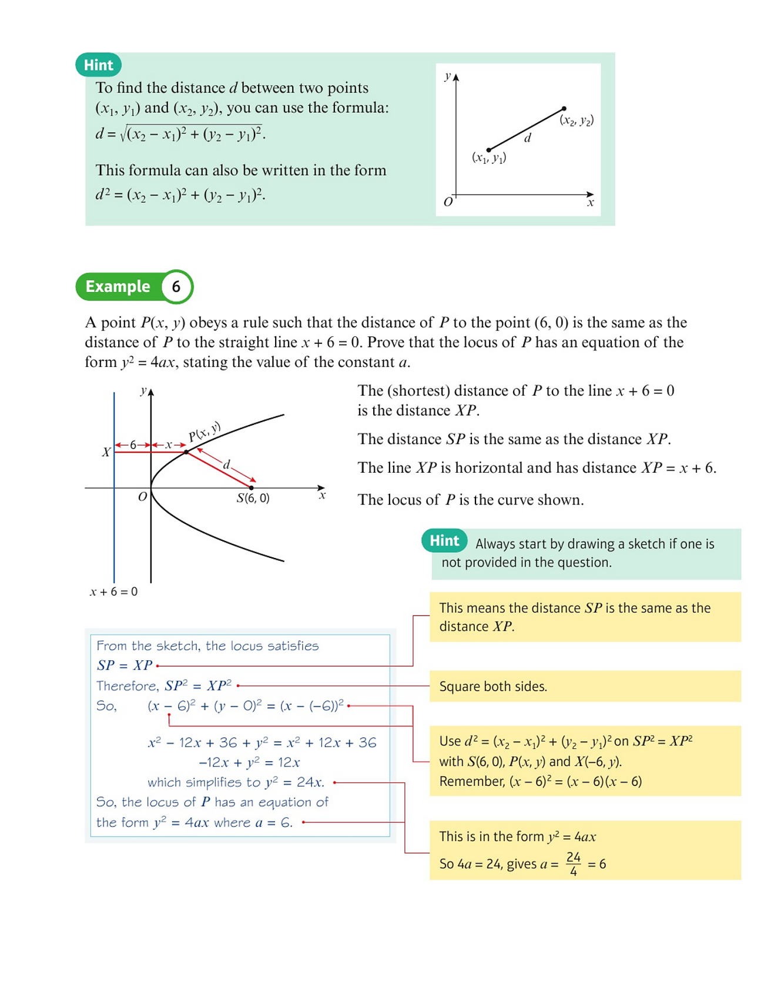
Source: textbook Example 6, book p.55; original PDF
p.66.
Focus-directrix locus lab
FP1 idea: equal distances, not general conic theory
Move P and watch the parabola appear
The focus is S=(a,0) and the directrix is x=-a . The perpendicular foot of P on the directrix is D. At every position, PS=PD .
PS = PD PS / PD = 1
The traced locus is y²=4ax . This equal-distance rule is exactly the FP1 requirement.
▶ Play
Reset
t
t = -2.20
FP3 preview: eccentricity is the fixed ratio e = PS/PD . Drag the e-slider continuously. The parabola occurs at the exact boundary e=1 .
e < 1 Jump to e = 0.65 e = 1 Parabola boundary e > 1 Jump to e = 1.45
e = 1.00 · PS = PD
Parabola: the boundary case
At exactly e=1, the closed-locus family changes into the open-locus family. The boundary curve is a parabola.
Boundary reached: e=1 gives the parabola.
PS = 1.00a distance to focus PD = 1.00a perpendicular distance to directrix
FP1 assesses the middle case e=1 ⇔ PS=PD . The full e-classification is shown only to preview FP3.
3. Reading
the focus and directrix from the equation
Compare an equation with
y 2 = 4 a x y^2=4ax
Example:
y 2 = 24 x ⇒ 4 a = 24 ⇒ a = 6 .
y^2=24x \quad\Rightarrow\quad 4a=24 \quad\Rightarrow\quad a=6.
Hence the focus is
( 6 , 0 ) (6,0) x = − 6 x=-6
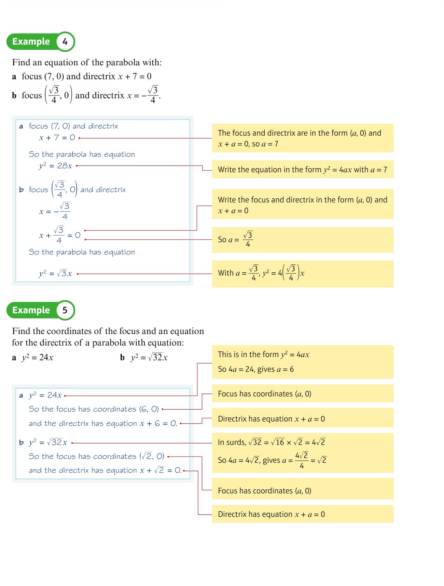
Source: textbook Examples 4 and 5, book p.54; original PDF
p.65.
4. Tangent to a parabola
At
P ( a t 2 , 2 a t ) ,
P(at^2,2at),
we have
d x d t = 2 a t , d y d t = 2 a .
\frac{dx}{dt}=2at, \qquad \frac{dy}{dt}=2a.
Thus, for
t ≠ 0 t\ne0
d y d x = 1 t .
\frac{dy}{dx}=\frac{1}{t}.
Using the point-gradient equation,
y − 2 a t = 1 t ( x − a t 2 ) .
y-2at=\frac1t(x-at^2).
Multiplying by
t t
t y = x + a t 2 .
\boxed{ty=x+at^2}.
This formula also works at
t = 0 t=0 x = 0 x=0
5. Normal to a parabola
The tangent gradient is
1 / t 1/t − t -t
y − 2 a t = − t ( x − a t 2 ) ,
y-2at=-t(x-at^2),
and hence
y + t x = 2 a t + a t 3 .
\boxed{y+tx=2at+at^3}.
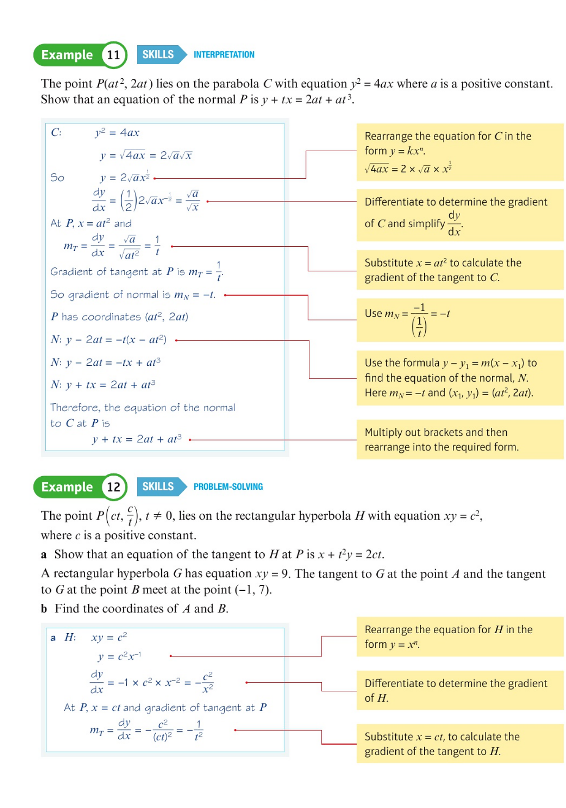
Source: textbook Example 11 and the start of Example 12, book
p.65; original PDF p.76.
6. Chord joining two
parametric points
Let
P ( a t 1 2 , 2 a t 1 ) , Q ( a t 2 2 , 2 a t 2 ) .
P(at_1^2,2at_1), \qquad Q(at_2^2,2at_2).
The equation of chord
P Q PQ
( t 1 + t 2 ) y = 2 x + 2 a t 1 t 2 .
\boxed{(t_1+t_2)y=2x+2at_1t_2}.
The tangents at
P P Q Q
R ( a t 1 t 2 , a ( t 1 + t 2 ) ) .
\boxed{R\left(at_1t_2,\,a(t_1+t_2)\right)}.
Focus-chord result
If chord
P Q PQ ( a , 0 ) (a,0) ( a , 0 ) (a,0)
0 = 2 a + 2 a t 1 t 2
0=2a+2at_1t_2
so
t 1 t 2 = − 1 .
\boxed{t_1t_2=-1}.
The two tangent gradients are
1 / t 1 1/t_1 1 / t 2 1/t_2
1 t 1 t 2 = − 1 .
\frac1{t_1t_2}=-1.
Therefore, the tangents at the ends of a focal chord are
perpendicular.
Textbook problem-solving
example
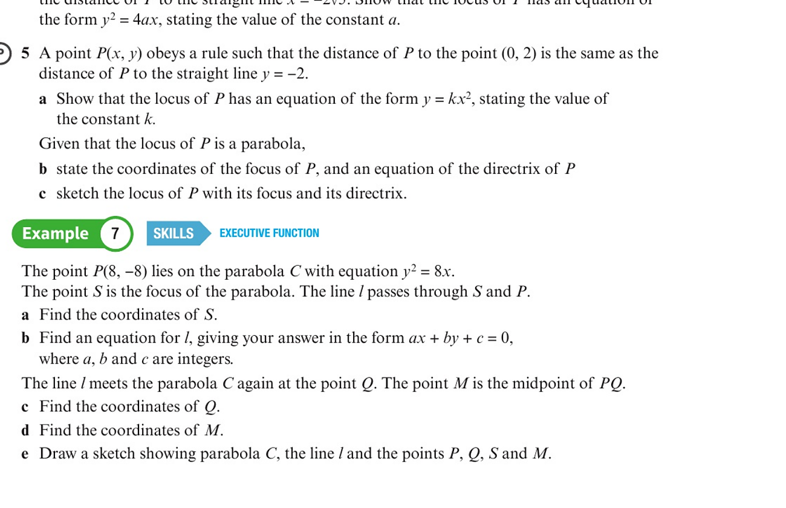
Source: textbook Example 7, book p.56; original PDF p.67. The
worked solution continues on book pp.57–58 / PDF pp.68–69.
Suggested solution plan:
read
a a y 2 = 4 a x y^2=4ax
write the focus;
find the line through the focus and the given point;
substitute the line equation into the parabola;
use the known intersection to obtain the second point;
calculate the midpoint and complete the sketch.
Selected textbook
practice for Section 4.2
Source
Selected questions
Purpose
Exercise 4B, book p.56 / PDF p.67
Q3, Q4
Prove a locus is a parabola from focus–directrix data
Exercise 4B, book p.56 / PDF p.67
Q5
Recognise a parabola with a vertical axis
Exercise 4C, book p.58 / PDF p.69
Q1–Q3
Intersections of a line and a parabola
Exercise 4C, book p.58 / PDF p.69
Q4
Parametric form, focus, directrix and exact geometry
Exercise 4C, book pp.58–59 / PDF pp.69–70
Q5–Q8
Multi-step focus, chord, midpoint and normal problems
Exercise 4D, book p.64 / PDF p.75
Q3
Normal to a parabola and exact length
Exercise 4E, book pp.66–68 / PDF pp.77–79
Q1, Q3, Q4, Q6, Q8, Q9
General tangent/normal formulae and parameter problems
Parabola past-paper handout
课堂流程： 先用下面的“套路地图”建立识别框架，再按 Practice 1 → 7 由基础到综合刷题。学生完成后逐步显示关键步骤，最后按需打开官方 mark scheme。
套路 A
读标准式，再做焦点—准线坐标几何
识别信号： 题目直接给 y²=4ax（或其数值式），并出现 focus、directrix、等距、弦、直线或面积。
标准解题链： 由 4a 的系数读出 a → 写 S=(a,0)、准线 x=-a → 把图形条件翻译成坐标/距离 → 代入 y²=4ax → 完成直线、长度或面积。
刷题顺序： Handout Q1 · Handout Q3 · Handout Q6
套路 B
单个参数点：切线配对或过定点
识别信号： 只出现一个参数 t（或 p），给定切线、切线经过某点，或切线与准线相交。
标准解题链： 写 P=(at²,2at) 与 ty=x+at² → 把已知直线和标准切线逐项配对，或把定点代入 → 解参数 → 回代 P 或所求交点。
刷题顺序： Handout Q5
套路 C
两个参数点：两切线、弦与焦点弦
识别信号： 出现 P(p)、Q(q)、两条切线、两切线交点或 chord through the focus。
标准解题链： 分别写 P、Q 的切线/两点弦 → 联立或代入焦点 → 得交点坐标或 pq=-1 → 再做距离恒等式或斜率积判定。
刷题顺序： Handout Q2
套路 D
轨迹题：先得到含参数坐标，再消元
识别信号： 题目出现 moving point、intersection 或 locus，并且两条直线都含同一参数。
标准解题链： 联立两条含参数直线 → 写出移动交点 (x,y) 与参数的关系 → 消去参数 → 整理成 Cartesian locus，并检查参数限制。
刷题顺序： Handout Q7
套路 E
法线过固定点（或圆心）
识别信号： 出现 normal、固定点在法线上，或圆与抛物线相切而圆心已知。
标准解题链： 写 y+tx=2at+at³ → 把固定点/圆心代入 → 解关于 t 的方程并排除退化根 → 回代接触点 → 完成长度或面积。
刷题顺序： Handout Q4
Handout Q1 · 套路 A · Focus-directrix property, parameter and area
套路 A · 读标准式，再做焦点—准线坐标几何
Section 4.2
2015 May IAL WFM01/01 Q4
Question-book PDF p.24
Official MS PDF p.195
套路 A 读标准式，再做焦点—准线坐标几何
识别信号： 题目直接给 y²=4ax（或其数值式），并出现 focus、directrix、等距、弦、直线或面积。
标准解题链： 由 4a 的系数读出 a → 写 S=(a,0)、准线 x=-a → 把图形条件翻译成坐标/距离 → 代入 y²=4ax → 完成直线、长度或面积。
本题落点： 利用 PS=到准线距离，先求 a，再求纵坐标和面积。
Past-paper question Click the image to enlarge
Teacher reveal Key steps only
Show step 1 of 4
Reset
1 Use the focus-directrix definition: PS = PQ , so PQ = 13 .
2 Since P = (9, y) and S = (a, 0) , PS² = (9-a)² + y² . From y² = 36a and PS = 13 , obtain a = 4 .
3 Then y² = 4a(9) = 144 , so the upper point has y = 12 .
4 Triangle PSQ has base PQ = 13 and perpendicular height 12 ; hence area = ½ × 13 × 12 = 78 .
View official mark scheme
Handout Q3 · 套路 A · Focus and exact triangle area
套路 A · 读标准式，再做焦点—准线坐标几何
Section 4.2
2016 May IAL WFM01/01 Q2
Question-book PDF p.76
Official MS PDF p.221
套路 A 读标准式，再做焦点—准线坐标几何
识别信号： 题目直接给 y²=4ax（或其数值式），并出现 focus、directrix、等距、弦、直线或面积。
标准解题链： 由 4a 的系数读出 a → 写 S=(a,0)、准线 x=-a → 把图形条件翻译成坐标/距离 → 代入 y²=4ax → 完成直线、长度或面积。
本题落点： 先由 4a=28 找焦点，再用弦的位置求端点与精确面积。
Past-paper question Click the image to enlarge
Teacher reveal Key steps only
Show step 1 of 4
Reset
1 Compare y² = 28x with y² = 4ax : a = 7 , so S = (7,0) .
2 The midpoint of OS has x-coordinate 7/2 ; therefore the vertical chord AB is x = 7/2 .
3 Substitution gives y² = 28(7/2) = 98 , so A,B = (7/2, ±7√2) and AB = 14√2 .
4 The perpendicular distance from S to AB is 7/2 ; hence area = ½(14√2)(7/2) = 49√2/2 .
View official mark scheme
Handout Q6 · 套路 A · Line through the focus and directrix intersection
套路 A · 读标准式，再做焦点—准线坐标几何
Section 4.2
2019 January IAL WFM01/01 Q1
Question-book PDF p.235
Official MS PDF p.340-341
套路 A 读标准式，再做焦点—准线坐标几何
识别信号： 题目直接给 y²=4ax（或其数值式），并出现 focus、directrix、等距、弦、直线或面积。
标准解题链： 由 4a 的系数读出 a → 写 S=(a,0)、准线 x=-a → 把图形条件翻译成坐标/距离 → 代入 y²=4ax → 完成直线、长度或面积。
本题落点： 先写焦点和准线，再用两点式求过焦点直线及其准线交点。
Past-paper question Click the image to enlarge
Teacher reveal Key steps only
Show step 1 of 4
Reset
1 For y² = 12x , a = 3 , so the focus is S = (3,0) and the directrix is x = -3 .
2 The line through A = (12,12) and S has gradient 4/3 .
3 Therefore AS: y = (4/3)x - 4 .
4 At the directrix x = -3 , y = -8 ; hence B = (-3,-8) .
View official mark scheme
Handout Q5 · 套路 B · Tangent, directrix and an exact parameter
套路 B · 单个参数点：切线配对或过定点
Section 4.1 + 4.2
2017 May IAL WFM01/01 Q8
Question-book PDF p.148
Official MS PDF p.271
套路 B 单个参数点：切线配对或过定点
识别信号： 只出现一个参数 t（或 p），给定切线、切线经过某点，或切线与准线相交。
标准解题链： 写 P=(at²,2at) 与 ty=x+at² → 把已知直线和标准切线逐项配对，或把定点代入 → 解参数 → 回代 P 或所求交点。
本题落点： 切线与准线交点给出一个参数方程，解正参数并回代精确坐标。
Past-paper question Click the image to enlarge
Teacher reveal Key steps only
Show step 1 of 4
Reset
1 Differentiate y² = 36x . At P(9p²,18p) , the tangent simplifies to py - x = 9p² .
2 Here 4a = 36 , so a = 9 and the directrix is x = -9 .
3 The tangent meets the directrix at (-9,6) . Substitute this point to obtain 3p² - 2p - 3 = 0 .
4 The required positive root is p = (1+√10)/3 ; hence P = (11+2√10, 6+6√10) .
View official mark scheme
Handout Q2 · 套路 C · Parametric points, tangents and their intersection
套路 C · 两个参数点：两切线、弦与焦点弦
Section 4.1 + 4.2
2015 May UK 6667/01 Q8
Question-book PDF p.52
Official MS PDF p.208
套路 C 两个参数点：两切线、弦与焦点弦
识别信号： 出现 P(p)、Q(q)、两条切线、两切线交点或 chord through the focus。
标准解题链： 分别写 P、Q 的切线/两点弦 → 联立或代入焦点 → 得交点坐标或 pq=-1 → 再做距离恒等式或斜率积判定。
本题落点： 两参数点各写一条切线，联立求交点，再做距离恒等式证明。
Past-paper question Click the image to enlarge
Teacher reveal Key steps only
Show step 1 of 4
Reset
1 For y² = 12x , the focus is S = (3,0) . Substitution of P = (3p²,6p) gives SP = 3(1+p²) .
2 The tangents at parameters p and q are py = x + 3p² and qy = x + 3q² .
3 Solving the two tangent equations gives R = (3pq, 3p+3q) .
4 Expand SR² using the coordinates of R; it simplifies to 9(1+p²)(1+q²) = SP·SQ .
View official mark scheme
Handout Q7 · 套路 D · Tangent, focus and locus elimination
套路 D · 轨迹题：先得到含参数坐标，再消元
Section 4.1 + 4.2
2021 October IAL WFM01/01 Q8
Question-book PDF p.405
Official MS PDF p.500
套路 D 轨迹题：先得到含参数坐标，再消元
识别信号： 题目出现 moving point、intersection 或 locus，并且两条直线都含同一参数。
标准解题链： 联立两条含参数直线 → 写出移动交点 (x,y) 与参数的关系 → 消去参数 → 整理成 Cartesian locus，并检查参数限制。
本题落点： 先联立两条含 p 的直线得到交点关系，最后消去 p 得轨迹。
Past-paper question Click the image to enlarge
Teacher reveal Key steps only
Show step 1 of 4
Reset
1 At parameter p , the tangent is py - x = 5p² .
2 Its y-intercept is A = (0,5p) ; the focus is S = (5,0) .
3 The second line has equation l₂: y = (2/p)x .
4 Eliminate p between the two line equations. The locus reduces to 2x² + y² = 10x .
View official mark scheme
Handout Q4 · 套路 E · Normal to a parabola and a tangent circle
套路 E · 法线过固定点（或圆心）
Section 4.2
2017 January IAL WFM01/01 Q8
Question-book PDF p.128
Official MS PDF p.254-255
套路 E 法线过固定点（或圆心）
识别信号： 出现 normal、固定点在法线上，或圆与抛物线相切而圆心已知。
标准解题链： 写 y+tx=2at+at³ → 把固定点/圆心代入 → 解关于 t 的方程并排除退化根 → 回代接触点 → 完成长度或面积。
本题落点： 圆心必须落在接触点法线上，由此筛出两个非零参数。
Past-paper question Click the image to enlarge
Teacher reveal Key steps only
Show step 1 of 4
Reset
1 Differentiate y² = 4ax . At P(at²,2at) , the normal gradient is -t , giving y + tx = at³ + 2at .
2 Since OB = 5OS and S = (a,0) , B = (5a,0) .
3 For the circle to touch the parabola at P, BP must be the normal. Substituting B into the normal gives t(t²-3)=0 ; the distinct non-zero parameters are t = ±√3 .
4 Thus Q,R = (3a, ±2√3a) , so QR = 4√3a and the distance from B to QR is 2a . Therefore area = 4√3a² .
View official mark scheme
Parabola homework review
作业讲评： 保留原作业 Q1 → Q4 顺序。题目默认显示；每题仍标注对应套路，关键步骤和官方 mark scheme 需要教师密码解锁。
套路 A
读标准式，再做焦点—准线坐标几何
识别信号： 题目直接给 y²=4ax（或其数值式），并出现 focus、directrix、等距、弦、直线或面积。
标准解题链： 由 4a 的系数读出 a → 写 S=(a,0)、准线 x=-a → 把图形条件翻译成坐标/距离 → 代入 y²=4ax → 完成直线、长度或面积。
刷题顺序： Homework Q1
套路 C
两个参数点：两切线、弦与焦点弦
识别信号： 出现 P(p)、Q(q)、两条切线、两切线交点或 chord through the focus。
标准解题链： 分别写 P、Q 的切线/两点弦 → 联立或代入焦点 → 得交点坐标或 pq=-1 → 再做距离恒等式或斜率积判定。
刷题顺序： Homework Q2
套路 B
单个参数点：切线配对或过定点
识别信号： 只出现一个参数 t（或 p），给定切线、切线经过某点，或切线与准线相交。
标准解题链： 写 P=(at²,2at) 与 ty=x+at² → 把已知直线和标准切线逐项配对，或把定点代入 → 解参数 → 回代 P 或所求交点。
刷题顺序： Homework Q3
套路 E
法线过固定点（或圆心）
识别信号： 出现 normal、固定点在法线上，或圆与抛物线相切而圆心已知。
标准解题链： 写 y+tx=2at+at³ → 把固定点/圆心代入 → 解关于 t 的方程并排除退化根 → 回代接触点 → 完成长度或面积。
刷题顺序： Homework Q4
Homework Q1 · 套路 A · Focus-directrix geometry and exact coordinates
套路 A · 读标准式，再做焦点—准线坐标几何
Section 4.2
2018 May IAL WFM01/01 Q3
Question-book PDF p.214
Official MS PDF p.310-311
套路 A 读标准式，再做焦点—准线坐标几何
识别信号： 题目直接给 y²=4ax（或其数值式），并出现 focus、directrix、等距、弦、直线或面积。
标准解题链： 由 4a 的系数读出 a → 写 S=(a,0)、准线 x=-a → 把图形条件翻译成坐标/距离 → 代入 y²=4ax → 完成直线、长度或面积。
本题落点： 焦点—准线等距性质与距离方程结合，求精确坐标。
Past-paper question Click the image to enlarge
Teacher reveal Key steps only
Show step 1 of 4
Reset
1 Compare with y²=4ax : a=3/2 , so S=(3/2,0) .
2 Use the focus-directrix property to convert the given distance into SP=14 .
3 Combine SP=14 with y²=6x and solve for x.
4 For the point above the axis, P=(25/2,5√3) .
View official mark scheme
Homework Q2 · 套路 C · Focal chord and perpendicular tangents
套路 C · 两个参数点：两切线、弦与焦点弦
Section 4.1 + 4.2
2016 May UK 6667/01 Q5
Question-book PDF p.102
Official MS PDF p.239
套路 C 两个参数点：两切线、弦与焦点弦
识别信号： 出现 P(p)、Q(q)、两条切线、两切线交点或 chord through the focus。
标准解题链： 分别写 P、Q 的切线/两点弦 → 联立或代入焦点 → 得交点坐标或 pq=-1 → 再做距离恒等式或斜率积判定。
本题落点： 由过焦点条件得到 pq=-1，再转化为两端切线斜率积为 -1。
Past-paper question Click the image to enlarge
Teacher reveal Key steps only
Show step 1 of 4
Reset
1 For parameters p and q, write the chord as y(p+q)=2x+2apq .
2 Because the chord passes through the focus (a,0) , obtain pq=-1 .
3 The tangent gradients are 1/p and 1/q .
4 Their product is 1/(pq)=-1 , so the tangents are perpendicular.
View official mark scheme
Homework Q3 · 套路 B · Given tangent, contact point and exact area
套路 B · 单个参数点：切线配对或过定点
Section 4.2
2020 May IAL WFM01/01 Q7
Question-book PDF p.332
Official MS PDF p.440
套路 B 单个参数点：切线配对或过定点
识别信号： 只出现一个参数 t（或 p），给定切线、切线经过某点，或切线与准线相交。
标准解题链： 写 P=(at²,2at) 与 ty=x+at² → 把已知直线和标准切线逐项配对，或把定点代入 → 解参数 → 回代 P 或所求交点。
本题落点： 把已知切线与标准切线式配对，读出a和参数后完成面积。
Past-paper question Click the image to enlarge
Teacher reveal Key steps only
Show step 1 of 4
Reset
1 Compare the given line with the standard tangent form to obtain a=9 .
2 Match the tangent parameter and obtain the contact point P=(16,24) .
3 Find the required intercept point A=(-9,21/4) .
4 Use a coordinate-area method to get 1875/8 .
View official mark scheme
Homework Q4 · 套路 E · Normals through a fixed point and directrix geometry
套路 E · 法线过固定点（或圆心）
Section 4.1 + 4.2
2022 June IAL WFM01/01 Q6
Question-book PDF p.457
Official MS PDF p.537
套路 E 法线过固定点（或圆心）
识别信号： 出现 normal、固定点在法线上，或圆与抛物线相切而圆心已知。
标准解题链： 写 y+tx=2at+at³ → 把固定点/圆心代入 → 解关于 t 的方程并排除退化根 → 回代接触点 → 完成长度或面积。
本题落点： 固定点代入一般法线求两个参数，再回到准线交点与面积。
Past-paper question Click the image to enlarge
Teacher reveal Key steps only
Show step 1 of 4
Reset
1 Use the normal formula y+tx=9t³+18t .
2 Passing through (54,0) gives t=±2 .
3 The two normals are y=-2x+108 and y=2x-108 .
4 Their directrix intersections are (-9,±126) , giving exact area 2268 .
View official mark scheme
4.3 Rectangular hyperbola
1. Textbook
coordinate and parametric forms
For
c > 0 c>0
x y = c 2
\boxed{xy=c^2}
and parametric equations
x = c t , y = c t , t ≠ 0 .
\boxed{x=ct, \qquad y=\frac{c}{t}}, \qquad t\ne0.
The two forms are equivalent because
x y = ( c t ) ( c t ) = c 2 .
xy=(ct)\left(\frac{c}{t}\right)=c^2.
Conversely, if
x y = c 2 xy=c^2 x ≠ 0 x\ne0 t = x / c t=x/c x = c t x=ct
y = c 2 x = c t .
y=\frac{c^2}{x}=\frac{c}{t}.
The asymptotes are
x = 0 and y = 0 .
\boxed{x=0 \quad\text{and}\quad y=0}.
The branches lie in quadrants I and III.
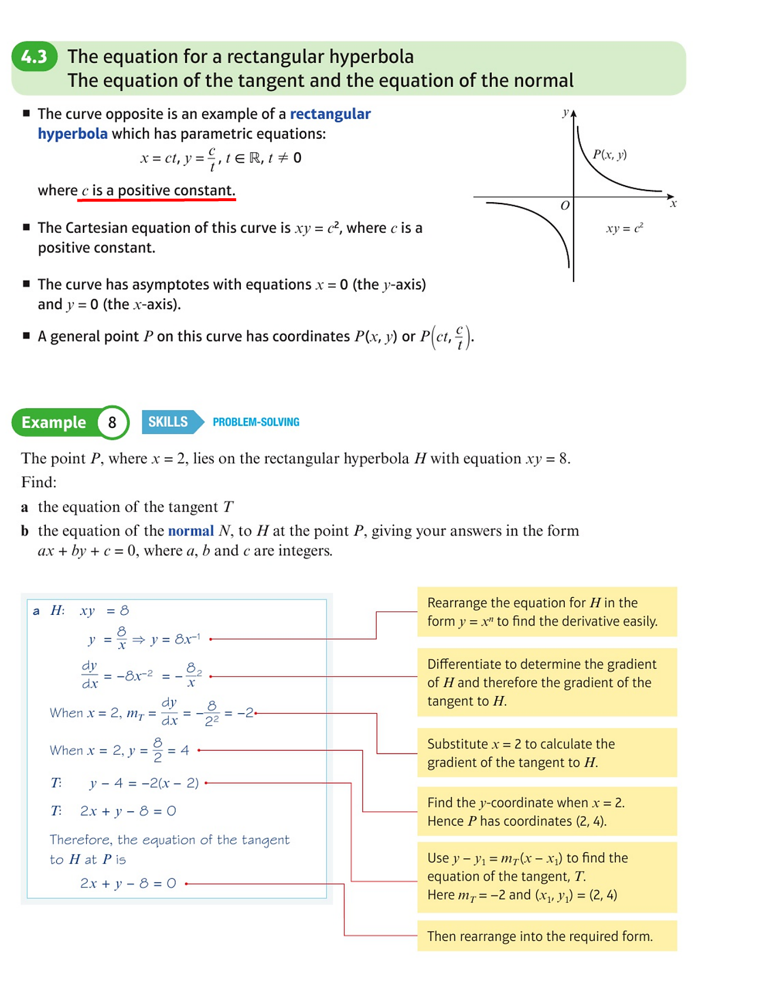
Source: Section 4.3 introduction and Example 8, book p.60;
original PDF p.71.
2. FP1 required model: keep it algebraic
Required in FP1: x y = c 2 xy=c^2 ( c t , c / t ) (ct,c/t)
Not needed here: general hyperbola focus/directrix definitions, eccentricity, ellipse-style standard forms, or rotation of axes. These belong to Further Coordinate Systems in FP3.
The curve has two branches and the coordinate axes are its asymptotes. For exam questions, move directly between the Cartesian form and the parameter point:
x y = c 2 ⇔ P ( c t , c / t ) \boxed{xy=c^2\iff P(ct,c/t)}
3. Tangent to a
rectangular hyperbola
At
P ( c t , c t ) ,
P\left(ct,\frac ct\right),
differentiate
y = c 2 / x y=c^2/x
d y d x = − c 2 x 2 .
\frac{dy}{dx}=-\frac{c^2}{x^2}.
At
x = c t x=ct
m T = − 1 t 2 .
m_T=-\frac1{t^2}.
Therefore
y − c t = − 1 t 2 ( x − c t ) ,
y-\frac ct=-\frac1{t^2}(x-ct),
which simplifies to
x + t 2 y = 2 c t .
\boxed{x+t^2y=2ct}.
4. Normal to a rectangular
hyperbola
The normal gradient is
m N = t 2 .
m_N=t^2.
Hence
y − c t = t 2 ( x − c t ) .
y-\frac ct=t^2(x-ct).
Multiplying by
t t
t 3 x − t y = c ( t 4 − 1 ) .
\boxed{t^3x-ty=c(t^4-1)}.
8. Chords and pairs of
tangents
Let
P ( c p , c p ) , Q ( c q , c q ) .
P\left(cp,\frac cp\right), \qquad Q\left(cq,\frac cq\right).
The chord
P Q PQ
x + p q y = c ( p + q ) .
\boxed{x+pq\,y=c(p+q)}.
The tangents at
P P Q Q
( 2 c p q p + q , 2 c p + q ) ,
\boxed{\left(\frac{2cpq}{p+q},\frac{2c}{p+q}\right)},
provided
p + q ≠ 0 p+q\ne0
If a tangent from an external point
( h , k ) (h,k) t t
h + t 2 k = 2 c t ,
h+t^2k=2ct,
so the possible contact parameters satisfy
k t 2 − 2 c t + h = 0 .
\boxed{kt^2-2ct+h=0}.
This quadratic is the quickest way to find two contact points from an
external point.
Textbook
Example 12 — general tangent and two contact points
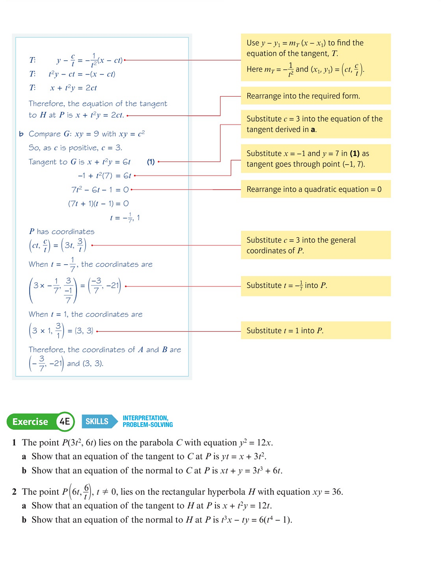
Source: continuation of textbook Example 12 and Exercise 4E
Q1–Q2, book p.66; original PDF p.77.
Selected textbook
practice for Section 4.3
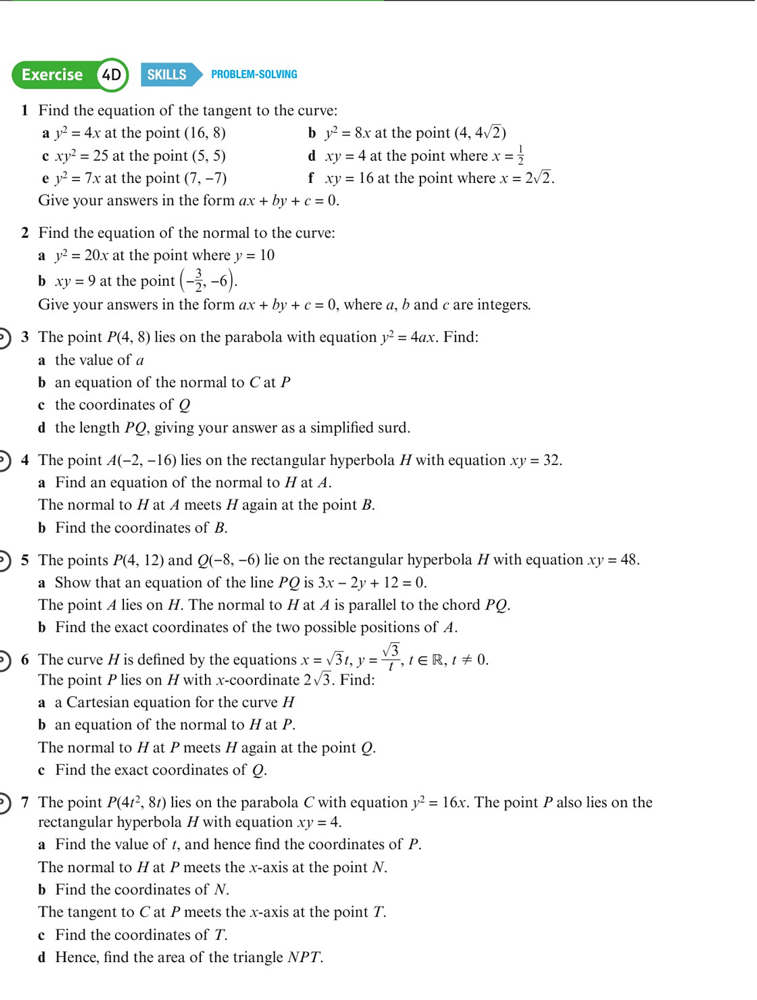
Source: Exercise 4D, book p.64; original PDF p.75.
Recommended selection:
Exercise 4D Q1(c), (d), (f): tangents to
rectangular hyperbolas;Exercise 4D Q2(b): normal to a hyperbola;Exercise 4D Q4: normal and second
intersection;Exercise 4D Q5: chord direction and parallel
normals;Exercise 4D Q6: parametric hyperbola, normal and
second intersection.
For deeper parameter work:
Exercise 4E Q2: derive the general tangent and
normal;Exercise 4E Q5: two tangents through a point;Exercise 4E Q7: combine a parabola and a
rectangular hyperbola.
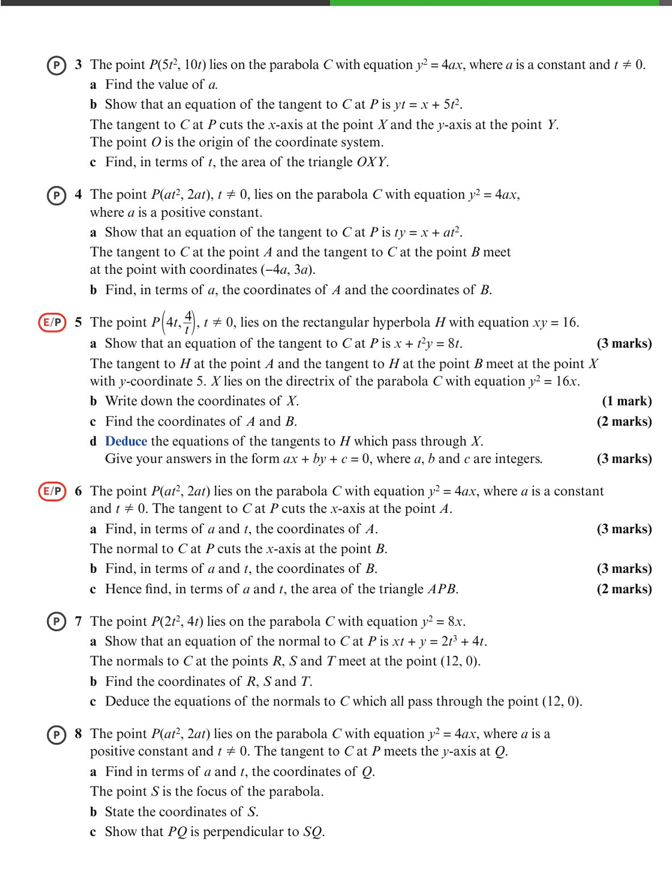
Source: Exercise 4E, book p.67; original PDF p.78.
Rectangular hyperbola past-paper handout
课堂流程： 先用下面的“套路地图”建立识别框架，再按 Practice 1 → 7 由基础到综合刷题。学生完成后逐步显示关键步骤，最后按需打开官方 mark scheme。
套路 A
法线再交曲线：去掉已知根
识别信号： 已知 P 在 xy=c² 上，要求 normal 与双曲线的另一个交点 Q；有时还续问 Q 点切线、长度或面积。
标准解题链： 由 y=c²/x 求切线斜率 → 负倒数写法线 → 用 y=c²/x 代回法线得二次方程 → 识别并去掉 P 对应的根（或用根的关系）→ 得 Q → 完成后续。
刷题顺序： Handout Q2 · Handout Q4 · Handout Q3 · Handout Q7
套路 B
外点引切线：参数二次方程给两个接触点
识别信号： 固定外点在某条/某两条切线上，要求 tangent equation 或 points of contact。
标准解题链： 写参数切线 x+t²y=2ct → 代入外点 → 解关于 t 的二次方程 → 每个 t 回代 (ct,c/t) 得一个接触点。
刷题顺序： Handout Q6
套路 C
两个参数点：弦与斜率条件
识别信号： 出现 P(p)、Q(q)、chord PQ，并给 perpendicular/parallel 或要求证明参数关系。
标准解题链： 由两参数点写弦 x+pqy=c(p+q) → 读出弦斜率 → 把垂直/平行条件转成斜率等式 → 化简参数关系 → 对照目标直线或法线。
刷题顺序： Handout Q1
套路 D
直线与参数曲线联立，再施加坐标条件
识别信号： 给直线与 xy=c² 的交点，或给法线与另一条直线的交点，并再问 midpoint/坐标条件。
标准解题链： 把 (ct,c/t) 代入直线，或联立参数法线与指定直线 → 解参数/交点 → 写中点坐标 → 用“在坐标轴上”等条件求剩余参数。
刷题顺序： Handout Q5
Handout Q2 · 套路 A · Normal at a point and the second intersection
套路 A · 法线再交曲线：去掉已知根
Section 4.3
2015 May UK 6667/01 Q5
Question-book PDF p.46
Official MS PDF p.205
套路 A 法线再交曲线：去掉已知根
识别信号： 已知 P 在 xy=c² 上，要求 normal 与双曲线的另一个交点 Q；有时还续问 Q 点切线、长度或面积。
标准解题链： 由 y=c²/x 求切线斜率 → 负倒数写法线 → 用 y=c²/x 代回法线得二次方程 → 识别并去掉 P 对应的根（或用根的关系）→ 得 Q → 完成后续。
本题落点： 数值点入手：法线代回曲线，去掉已知交点，得到第二交点。
Past-paper question Click the image to enlarge
Teacher reveal Key steps only
Show step 1 of 4
Reset
1 Differentiate the rectangular hyperbola and evaluate the tangent gradient at A = (6,3/2) .
2 Take the negative reciprocal to get the normal gradient. The normal is 2y - 8x + 45 = 0 .
3 Substitute the hyperbola equation into the normal to form a quadratic in one coordinate.
4 Discard the known root corresponding to A. The second intersection is B = (-3/8,-24) .
View official mark scheme
Handout Q4 · 套路 A · A numerical normal and its second intersection
套路 A · 法线再交曲线：去掉已知根
Section 4.3
2016 May IAL WFM01/01 Q6
Question-book PDF p.84
Official MS PDF p.226
套路 A 法线再交曲线：去掉已知根
识别信号： 已知 P 在 xy=c² 上，要求 normal 与双曲线的另一个交点 Q；有时还续问 Q 点切线、长度或面积。
标准解题链： 由 y=c²/x 求切线斜率 → 负倒数写法线 → 用 y=c²/x 代回法线得二次方程 → 识别并去掉 P 对应的根（或用根的关系）→ 得 Q → 完成后续。
本题落点： 给定参数的数值法线题，重复“法线→代回→去已知根”。
Past-paper question Click the image to enlarge
Teacher reveal Key steps only
Show step 1 of 4
Reset
1 Use the given parameter t = 1/2 to obtain the coordinates of the first point on the hyperbola.
2 Differentiate, take the negative reciprocal gradient and form the normal: 8y - 2x - 75 = 0 .
3 Substitute the hyperbola equation into this normal and solve the resulting quadratic.
4 Remove the known intersection. The second point is B = (-40,-5/8) .
View official mark scheme
Handout Q3 · 套路 A · General normal and the second parametric point
套路 A · 法线再交曲线：去掉已知根
Section 4.3
2016 January IAL WFM01/01 Q6
Question-book PDF p.64
Official MS PDF p.214
套路 A 法线再交曲线：去掉已知根
识别信号： 已知 P 在 xy=c² 上，要求 normal 与双曲线的另一个交点 Q；有时还续问 Q 点切线、长度或面积。
标准解题链： 由 y=c²/x 求切线斜率 → 负倒数写法线 → 用 y=c²/x 代回法线得二次方程 → 识别并去掉 P 对应的根（或用根的关系）→ 得 Q → 完成后续。
本题落点： 把同一套路推广到一般参数 p，利用根的关系得到第二点。
Past-paper question Click the image to enlarge
Teacher reveal Key steps only
Show step 1 of 4
Reset
1 At P = (cp,c/p) on xy = c² , the tangent gradient is -1/p² ; hence the normal gradient is p² .
2 The normal becomes py - p³x = c(1-p⁴) .
3 Substitute y = c²/x into the normal. One root is the known x-coordinate cp .
4 Using the other root gives Q = (-c/p³,-cp³) .
View official mark scheme
Handout Q7 · 套路 A · Normal, second intersection and tangent at Q
套路 A · 法线再交曲线：去掉已知根
Section 4.3
2022 January IAL WFM01/01 Q7
Question-book PDF p.428
Official MS PDF p.520
套路 A 法线再交曲线：去掉已知根
识别信号： 已知 P 在 xy=c² 上，要求 normal 与双曲线的另一个交点 Q；有时还续问 Q 点切线、长度或面积。
标准解题链： 由 y=c²/x 求切线斜率 → 负倒数写法线 → 用 y=c²/x 代回法线得二次方程 → 识别并去掉 P 对应的根（或用根的关系）→ 得 Q → 完成后续。
本题落点： 找到第二交点后继续在新点求切线，是套路A的完整综合版。
Past-paper question Click the image to enlarge
Teacher reveal Key steps only
Show step 1 of 4
Reset
1 Differentiate xy = 36 . At P = (4,9) , the normal is 4x - 9y + 65 = 0 .
2 Substitute y = 36/x into the normal and solve; the second point is Q = (-81/4,-16/9) .
3 At Q, use dy/dx = -36/x² to obtain the tangent gradient -64/729 .
4 The tangent at Q is y = -(64/729)x - 32/9 .
View official mark scheme
Handout Q6 · 套路 B · Tangents through an external point
套路 B · 外点引切线：参数二次方程给两个接触点
Section 4.3
2019 January IAL WFM01/01 Q5
Question-book PDF p.246
Official MS PDF p.348
套路 B 外点引切线：参数二次方程给两个接触点
识别信号： 固定外点在某条/某两条切线上，要求 tangent equation 或 points of contact。
标准解题链： 写参数切线 x+t²y=2ct → 代入外点 → 解关于 t 的二次方程 → 每个 t 回代 (ct,c/t) 得一个接触点。
本题落点： 外点代入参数切线，二次方程的两根就是两个接触参数。
Past-paper question Click the image to enlarge
Teacher reveal Key steps only
Show step 1 of 4
Reset
1 For H: xy = 16 and P = (4p,4/p) , calculus gives the tangent x + p²y = 8p .
2 Because the tangent passes through (7,1) , p² - 8p + 7 = 0 .
3 Hence p = 1 or p = 7 .
4 The two contact points are (4,4) and (28,4/7) .
View official mark scheme
Handout Q1 · 套路 C · Chord, perpendicularity and a parallel normal
套路 C · 两个参数点：弦与斜率条件
Section 4.3
2015 May IAL WFM01/01 Q6
Question-book PDF p.28
Official MS PDF p.197
套路 C 两个参数点：弦与斜率条件
识别信号： 出现 P(p)、Q(q)、chord PQ，并给 perpendicular/parallel 或要求证明参数关系。
标准解题链： 由两参数点写弦 x+pqy=c(p+q) → 读出弦斜率 → 把垂直/平行条件转成斜率等式 → 化简参数关系 → 对照目标直线或法线。
本题落点： 先写两参数点的弦，再把垂直与平行条件分别转成斜率关系完成证明。
Past-paper question Click the image to enlarge
Teacher reveal Key steps only
Show step 1 of 4
Reset
1 For xy = 36 , write P = (6p,6/p) and Q = (6q,6/q) .
2 The chord through P and Q simplifies to x + pqy = 6(p+q) .
3 Use the given perpendicularity condition to obtain the required relation between p and q .
4 Differentiate xy = 36 at R. The resulting normal gradient equals the chord gradient, proving that the normal at R is parallel to PQ.
View official mark scheme
Handout Q5 · 套路 D · Normal, midpoint condition and parameter
套路 D · 直线与参数曲线联立，再施加坐标条件
Section 4.3
2016 May UK 6667/01 Q9
Question-book PDF p.110
Official MS PDF p.243
套路 D 直线与参数曲线联立，再施加坐标条件
识别信号： 给直线与 xy=c² 的交点，或给法线与另一条直线的交点，并再问 midpoint/坐标条件。
标准解题链： 把 (ct,c/t) 代入直线，或联立参数法线与指定直线 → 解参数/交点 → 写中点坐标 → 用“在坐标轴上”等条件求剩余参数。
本题落点： 法线与 y=-x 联立求 A，再用 AP 中点在 x 轴上的条件解参数。
Past-paper question Click the image to enlarge
Teacher reveal Key steps only
Show step 1 of 4
Reset
1 At P = (5p,5/p) , the normal is y - p²x = 5/p - 5p³ .
2 Intersect it with y = -x to get A = (-5/p+5p, 5/p-5p) .
3 Form the midpoint M of A and P and apply the condition that M lies on the x-axis.
4 This gives p = √2 , and then xM = 15√2/4 .
View official mark scheme
Rectangular hyperbola homework review
作业讲评： 保留原作业 Q1 → Q4 顺序。题目默认显示；每题仍标注对应套路，关键步骤和官方 mark scheme 需要教师密码解锁。
套路 D
直线与参数曲线联立，再施加坐标条件
识别信号： 给直线与 xy=c² 的交点，或给法线与另一条直线的交点，并再问 midpoint/坐标条件。
标准解题链： 把 (ct,c/t) 代入直线，或联立参数法线与指定直线 → 解参数/交点 → 写中点坐标 → 用“在坐标轴上”等条件求剩余参数。
刷题顺序： Homework Q1
套路 B
外点引切线：参数二次方程给两个接触点
识别信号： 固定外点在某条/某两条切线上，要求 tangent equation 或 points of contact。
标准解题链： 写参数切线 x+t²y=2ct → 代入外点 → 解关于 t 的二次方程 → 每个 t 回代 (ct,c/t) 得一个接触点。
刷题顺序： Homework Q2
套路 A
法线再交曲线：去掉已知根
识别信号： 已知 P 在 xy=c² 上，要求 normal 与双曲线的另一个交点 Q；有时还续问 Q 点切线、长度或面积。
标准解题链： 由 y=c²/x 求切线斜率 → 负倒数写法线 → 用 y=c²/x 代回法线得二次方程 → 识别并去掉 P 对应的根（或用根的关系）→ 得 Q → 完成后续。
刷题顺序： Homework Q3 · Homework Q4
Homework Q1 · 套路 D · Parametric line intersections and midpoint
套路 D · 直线与参数曲线联立，再施加坐标条件
Section 4.1 + 4.3
2017 May IAL WFM01/01 Q4
Question-book PDF p.140
Official MS PDF p.263
套路 D 直线与参数曲线联立，再施加坐标条件
识别信号： 给直线与 xy=c² 的交点，或给法线与另一条直线的交点，并再问 midpoint/坐标条件。
标准解题链： 把 (ct,c/t) 代入直线，或联立参数法线与指定直线 → 解参数/交点 → 写中点坐标 → 用“在坐标轴上”等条件求剩余参数。
本题落点： 把直线—曲线交点问题转成关于 t 的二次方程，再回代两点和中点。
Past-paper question Click the image to enlarge
Teacher reveal Key steps only
Show step 1 of 4
Reset
1 Substitute the parametric point into the given straight-line condition.
2 The parameter equation is 4t²+5t-6=0 , so t=3/4 or t=-2 .
3 The points are A=(3,16/3) and B=(-8,-2) .
4 Their midpoint is (-5/2,5/3) .
View official mark scheme
Homework Q2 · 套路 B · General tangent and two contact points
套路 B · 外点引切线：参数二次方程给两个接触点
Section 4.3
2021 June IAL WFM01/01 Q4
Question-book PDF p.372
Official MS PDF p.479
套路 B 外点引切线：参数二次方程给两个接触点
识别信号： 固定外点在某条/某两条切线上，要求 tangent equation 或 points of contact。
标准解题链： 写参数切线 x+t²y=2ct → 代入外点 → 解关于 t 的二次方程 → 每个 t 回代 (ct,c/t) 得一个接触点。
本题落点： 外点代入参数切线后，一个二次方程同时给出两个接触参数。
Past-paper question Click the image to enlarge
Teacher reveal Key steps only
Show step 1 of 4
Reset
1 Write the parameter tangent as x+t²y=10t .
2 Pass it through (15,-5) to obtain t²+2t-3=0 .
3 Thus t=1 or t=-3 .
4 The contact points are (5,5) and (-15,-5/3) .
View official mark scheme
Homework Q3 · 套路 A · General normal and second intersection
套路 A · 法线再交曲线：去掉已知根
Section 4.3
2020 May IAL WFM01/01 Q5
Question-book PDF p.324
Official MS PDF p.436
套路 A 法线再交曲线：去掉已知根
识别信号： 已知 P 在 xy=c² 上，要求 normal 与双曲线的另一个交点 Q；有时还续问 Q 点切线、长度或面积。
标准解题链： 由 y=c²/x 求切线斜率 → 负倒数写法线 → 用 y=c²/x 代回法线得二次方程 → 识别并去掉 P 对应的根（或用根的关系）→ 得 Q → 完成后续。
本题落点： 一般参数法线代回双曲线，并用根的关系直接拿到第二交点。
Past-paper question Click the image to enlarge
Teacher reveal Key steps only
Show step 1 of 4
Reset
1 At parameter p, derive the normal p³x-py=8(p⁴-1) .
2 Substitute y=64/x to obtain a quadratic in x.
3 One root is the known x-coordinate 8p ; use the product of roots for the second.
4 Hence Q=(-8/p³,-8p³) .
View official mark scheme
Homework Q4 · 套路 A · Normal, exact length and triangle area
套路 A · 法线再交曲线：去掉已知根
Section 4.3
2020 January IAL WFM01/01 Q8
Question-book PDF p.304
Official MS PDF p.417
套路 A 法线再交曲线：去掉已知根
识别信号： 已知 P 在 xy=c² 上，要求 normal 与双曲线的另一个交点 Q；有时还续问 Q 点切线、长度或面积。
标准解题链： 由 y=c²/x 求切线斜率 → 负倒数写法线 → 用 y=c²/x 代回法线得二次方程 → 识别并去掉 P 对应的根（或用根的关系）→ 得 Q → 完成后续。
本题落点： 第二交点之后继续做精确长度、切线截距和三角形面积。
Past-paper question Click the image to enlarge
Teacher reveal Key steps only
Show step 1 of 4
Reset
1 At t=2 , A=(8,2) and the normal is y=4x-30 .
2 Substitute into the hyperbola and remove the known root to get B=(-1/2,-32) .
3 Distance formula gives AB=17√17/2 .
4 The tangent at A meets the y-axis at C=(0,4) ; coordinate area gives 289/2 .
View official mark scheme
Parabola
For
y 2 = 4 a x , P ( a t 2 , 2 a t ) ,
y^2=4ax, \qquad P(at^2,2at),
Result
Formula
Focus
( a , 0 ) (a,0)
Directrix
x = − a x=-a
Tangent at parameter
t t
t y = x + a t 2 ty=x+at^2
Normal at parameter
t t
y + t x = 2 a t + a t 3 y+tx=2at+at^3
Chord parameters
t 1 , t 2 t_1,t_2
( t 1 + t 2 ) y = 2 x + 2 a t 1 t 2 (t_1+t_2)y=2x+2at_1t_2
Intersection of tangents
( a t 1 t 2 , a ( t 1 + t 2 ) ) (at_1t_2,\,a(t_1+t_2))
Focal chord condition
t 1 t 2 = − 1 t_1t_2=-1
Rectangular hyperbola
For
x y = c 2 , P ( c t , c t ) ,
xy=c^2, \qquad P\left(ct,\frac ct\right),
Result
Formula
Asymptotes
x = 0 x=0 y = 0 y=0
Tangent gradient
− 1 / t 2 -1/t^2
Normal gradient
t 2 t^2
Tangent at parameter
t t
x + t 2 y = 2 c t x+t^2y=2ct
Normal at parameter
t t
t 3 x − t y = c ( t 4 − 1 ) t^3x-ty=c(t^4-1)
Chord parameters
p , q p,q
x + p q y = c ( p + q ) x+pq\,y=c(p+q)
Tangent parameter through
( h , k ) (h,k)
k t 2 − 2 c t + h = 0 kt^2-2ct+h=0
Suggested classroom
sequence without slides
Lesson 1 — Parametric
equations
Display Textbook Example 1.
Build the value table with the class.
Eliminate the parameter in Examples 2 and 3.
Use Exercise 4A Q6–Q7 as the exit task.
Lesson 2 — Parabola as a
locus
Begin with the focus–directrix diagram.
Derive
y 2 = 4 a x y^2=4ax
Use Examples 4–6 to practise reading and proving the equation.
Finish with Exercise 4B Q3 or Q4.
Lesson 3 —
Parabola tangents, normals and chords
Derive
t y = x + a t 2 ty=x+at^2 y + t x = 2 a t + a t 3 y+tx=2at+at^3
Use Example 7 as the main problem-solving example.
Develop the chord formula and the focal-chord result.
Lesson 4 — Rectangular hyperbola
Connect x = c t , y = c / t x=ct,\ y=c/t x y = c 2 xy=c^2
Sketch the two branches and identify the coordinate axes as asymptotes.
Practise substituting a parameter point into a straight line and solving the resulting equation in t.
Do not introduce general-conic theory or rotations of axes: those are FP3 extensions.
Lesson 5 — Hyperbola
tangents and normals
Derive
x + t 2 y = 2 c t x+t^2y=2ct t 3 x − t y = c ( t 4 − 1 ) t^3x-ty=c(t^4-1)
Use Example 12 to find two contact points from an external
point.
Practise with Exercise 4D Q4–Q6 and Exercise 4E Q2 or Q5.
Source-page index
Note item
Textbook page
Original PDF page
Chapter learning objectives
49
60
Section 4.1 and Example 1
50
61
Examples 2 and 3
51–52
62–63
Exercise 4A and Section 4.2 introduction
53
64
Examples 4 and 5
54
65
Example 6
55
66
Exercise 4B and Example 7 question
56
67
Example 7 solution
57–58
68–69
Exercise 4C
58–59
69–70
Section 4.3 and Example 8
60–61
71–72
Examples 9 and 10
61–63
72–74
Exercise 4D
64
75
Examples 11 and 12
65–66
76–77
Exercise 4E
66–68
77–79
The detailed screenshot and exercise-selection register is stored in
FP1_Chapter_4_Note_Source_Index.csv.